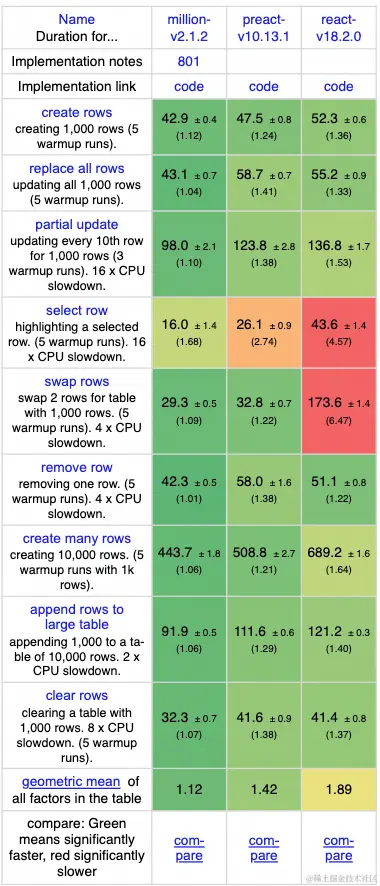
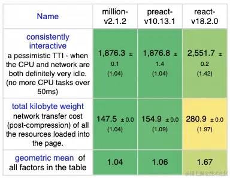
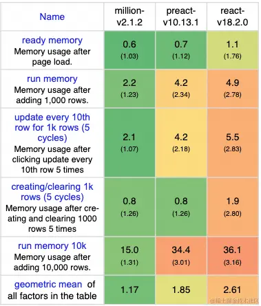

HaoTian · 2024-12-28 15:32:51
Million.js 是一款极其快速和轻量级的优化编译器，可以使组件速度提升高达 70%。 。它提供了一种叫做“block”虚拟 DOM 的技术，这种技术比 React 的传统虚拟 DOM 更快，因为它通过 diff 算法比对数据而不是 DOM 本身。
它可以轻松集成到现有的 React 应用中，不需要学习新的框架，并且可以在几分钟内部署。
Million 是一个为 React 应用程序提供优化的 JS 库。它的创造是为了解决特定的性能问题，特别是在虚拟 DOM（Virtual DOM）和更新过程中。React 是一个非常受欢迎的 JavaScript 库，它允许开发者通过声明式的方式构建用户界面，并通过其虚拟 DOM 系统来高效地更新和渲染组件。然而，当处理大型或复杂的应用程序时，React 可能会遇到性能瓶颈。
要明白为什么要使用Million.js，我们需要了解 React 是如何更新界面的。当一个应用的状态(state)或属性(props)发生变化时，React 会经历一个分为渲染(rendering)和对比更新(reconciliation)的两部分的更新过程。
以我们的 App 为例：
function App() {
const [count, setCount] = useState(0);
const increment = () => setCount(count + 1);
return (
<div>
<p>Count: {count}</p>
<button onClick={increment}>Increment</button>
</div>
);
}
在这个 App 中，当我点击按钮时，count 状态将更新，<p>标签也会更新以反映新的值。让我们分解这一过程：
渲染
第一步是渲染。渲染是生成当前组件快照的过程。你可以将其想象成简单地“调用”App 函数并将输出存储在一个变量中。这就是 App 快照可能的样子：
const snapshot = App();
// snapshot =
<div>
<p>Count: 1</p>
<button onClick={increment}>Increment</button>
</div>;
对比更新
为了更新界面以反映新状态，React 需要将旧快照与新快照进行比较（称为"diffing"）。React 的对比器会检查旧快照中的每个元素，并将其与新快照进行比较。如果元素相同，则跳过。如果元素不同，则更新。
<div>标签相同，所以不需要更新。✅<p>标签相同，所以不需要更新。✅<p>标签内的文本不同，所以需要更新。⚠️<button>标签相同，所以不需要更新。✅onClick属性相同，所以不需要更新。✅<button>标签内的文本相同，所以不需要更新。✅<div>
- <p>Count: 0</p>
+ <p>Count: 1</p>
<button onClick={increment}>Increment</button>
</div>
从这里我们可以看到，<p>标签需要更新。React 随后会更新<p> DOM 节点以反映新值：
<p>.innerHTML = `Count: ${count}`;
React 是慢的。
React 的对比更新问题在于，当你拥有越来越多的 JSX 元素时，它会变得指数级慢。在这个简单的 App 中，它只需要对比几个元素。在一个真实世界的 React 应用中，你很容易拥有数百个元素，这会减慢界面更新。
具体来说，Million 试图解决以下几个问题：
Million 通过优化这一过程来提高性能，尤其是在组件变化时。Million 减少了这种内存占用，通过采用更高效的数据结构和更新策略。Million 的优化旨在加快首次加载时间，提升用户体验。Million 能够减轻这种负荷。上面 React 的示例，Million.js通过完全跳过 diffing 步骤，并直接更新 DOM 节点来解决这一问题。
以下是一个Million.js对比器工作的概念示例：
function App() {
const [count, setCount] = useState(0);
const increment = () => setCount(count + 1);
// 由编译器生成
if (count !== prevCount) {
<p>.innerHTML = `Count: ${count}`;
}
<button>.onclick = increment;
// ...
}
注意，当 count 更新时，Million.js将直接更新 DOM 节点。Million.js将 React 对比更新从 O(n^3)（立方时间）转变为 O(1)（恒定时间）。
Duration in milliseconds ± 95% confidence interval (Slowdown = Duration / Fastest)
Startup metrics (lighthouse with mobile simulation)
Memory allocation in MBs ± 95% confidence interval
安装
Million.js 假定您已经有一个现有的 React 项目。要了解如何创建一个 React 应用，请参阅 React 的文档。
通过 CLI 安装
Million.js CLI 将自动为您安装包并配置您的项目。
npx million@latest
Million.js 兼容 React 16 及以上版本。如果您使用的是更旧的 React 版本，您需要先升级。
就是这样！您的项目现在运行在Million.js上了 🎉
手动安装
如果您在通过 CLI 安装时遇到问题，或者您有自定义设置，您可以手动安装Million.js。
请注意，您可以选择两种模式：自动和手动：
安装Million.js
npm install million
将编译器添加到您的应用程序
Million.js 在/app（仅限"使用客户端"组件）和/pages中得到支持。
vite.config.js
import million from "million/compiler";
import react from "@vitejs/plugin-react";
import { defineConfig } from "vite";
export default defineConfig({
plugins: [million.vite({ auto: true }), react()],
});
webpack.config.js
const million = require("million/compiler");
module.exports = {
plugins: [million.webpack({ auto: true })],
};
rollup.config.js
import million from "million/compiler";
export default {
plugins: [million.rollup({ auto: true })],
};
以下是Million的主要 API 列表，以表格形式进行了组织：
| API | 描述 |
|---|---|
block() |
实例化一个无状态的“块”组件，返回一个虚拟节点（VNode）。 |
mount() |
用于将块挂载到 DOM 元素上，类似于 React 中的 ReactDOM.render()。 |
patch() |
用于使用另一个块重新渲染一个块，用于更新变化后的组件。 |
mapArray() |
创建一个块列表，用于基于类数组数据渲染视图，并在数组变化时在 DOM 中更新或移动项目。 |
renderToTemplate() |
将虚拟 DOM 节点渲染为字符串，用于创建块的模板。 |
stringToDOM() |
将 HTML 或 SVG 字符串转换为 DOM 对象，用于从字符串创建 DOM 元素。 |
<For /> |
组件用于高效地渲染块列表，它接受一个数组，并为数组中的每个项渲染块。 |
决定是否将你的 React 项目迁移到使用Million.js的关键取决于几个因素：
PureComponent等）已经达到极限，那么使用Million.js可能会带来所需的性能提升。Million.js的优化中受益更多，因为在这些情况下，React 的虚拟 DOM 操作可能成为性能瓶颈。Million.js与你的项目依赖、浏览器支持和设备兼容性。确保在决定迁移之前，Million.js能够在你的目标平台上稳定运行。Million.js？他们需要多少时间来学习和适应新的工具？Million.js的社区支持和生态系统成熟度。一个活跃的社区和丰富的资源可以在迁移和后续开发过程中提供帮助。Million.js的维护和长期支持。一个持续更新和维护的库将更有可能适应未来的 Web 开发需求。在做出决定之前，请进行彻底的测试，以确保Million.js能够符合你的性能目标，并且不会引入新的问题。如果可能，以渐进的方式迁移一小部分应用程序，并监控性能和稳定性的变化，可以帮助你做出更明智的决策。如果决定迁移，请确保有适当的回滚计划以防万一。